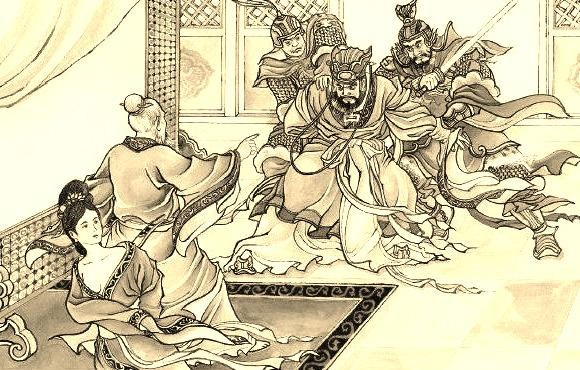

Historia
UNA TRAGEDIA ÉPICA , PERO MUY HUMANA
Basada en una obra clásica china, cuenta la historia de un huérfano que vengará la muerte de su familia.
El clan Zhao al completo es exterminado en una matanza. La propia reina lleva en su vientre un Zhao y el
mismo día de la masacre da a luz. Cheng Ying, un médico - sanador, la asiste en el parto y sacrifica a su
propio hijo acabado de nacer para salvar al último miembro de la dinastía. Zhao Wu, con la ayuda del doctor
, buscará vengarse de la familia rival y de los asesinos cuando crezca y descubra la implacable verdad de
su infancia emprendiendo un épico viaje de sacrificio y venganza.
QUE LA MÚSICA Y KUROSAWA NOS ACOMPAÑEN
Un reparto encabezado por Julio Manrique, y con vestuario oriental como aliado, está escoltado de música en
directo y de la voz de Joan Garriga, de La Troba Kung-Fú. Entendida como un lenguaje dramatúrgico más, esta
banda sonora está compuesta especialmente para L’Orfe del Clan dels Zhao, mezclando influencias orientales
con los gustos propios, de la misma manera que el equipo artístico ha hecho con el texto.
Ficha técnica
-
Autor:
Ji Junxiag
-
Dirección:
Oriol Broggi
-
Traducción:
Joan Sellent
Marc Artigau
-
Adaptación:
Joan Sellent
Marc Artigau
-
Producción:
La Perla 29

un antiguo drama chino